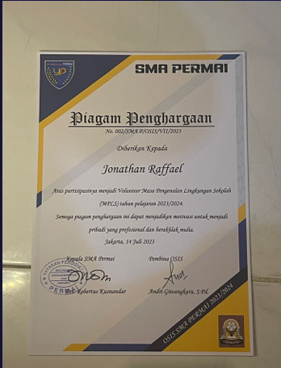

Jonathan Raffael
Summary
I am a first-year student at BINUS University, pursuing a degree in
Computer Science. Passionate about technology and always eager to learn, I
am actively exploring various technology fields.
Education
-
SMP Permai Jakarta (2018 - 2021)
-
Studied within the K13 Curicculum (social & science)
-
SMA Permai Jakarta (2021 - 2024)
-
Majoring in Science & Mathematics
-
Bina Nusantara University (2024 - present)
-
Majoring in Computer Science (Regular)
Work Experience
-
Pengurus OSIS at SMA Permai (2021 - 2022)
-
Menjalankan jabatan di bidang kerohanian selama satu
tahun masa kepengurusan
-
Aktif dalam menjadi panitia di seksi perlengkapan dan
keamanan di acara - acara sekolah
-
Mentor MPLS at SMA Permai (May 2022 - July 2022)
-
Memimpin dan membimbing siswa baru dalam
program Masa Pengenalan Lingkungan Sekolah (MPLS)
-
Berperan aktif dalam mengorganisir kegiatan edukatif
dan interaktif yang membantu siswa baru beradaptasi
dengan lingkungan sekolah
-
Volunteer MPLS (May 2023 - July 2023)
-
Berpartisipasi dalam program Masa Pengenalan
Lingkungan Sekolah (MPLS) untuk membantu siswa
baru dalam proses orientasi
-
Bekerja sama dengan tim mentor untuk mendukung
dan membantu kegiatan yang diberikan kepada siswa
siswi baru
Skills
- Time Management: ⭐️⭐️⭐️⭐️
- Adaptability: ⭐️⭐️⭐️⭐️⭐️
- Critical Thinking: ⭐️⭐️⭐️⭐️
- Work Ethic: ⭐️⭐️⭐️
- Problem Solving: ⭐️⭐️⭐️
Awards and Certifications

Other